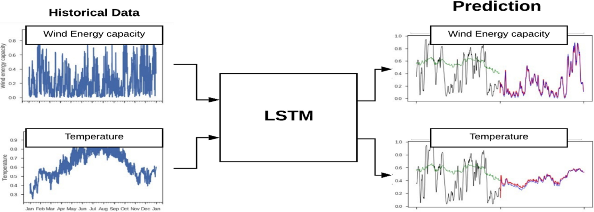
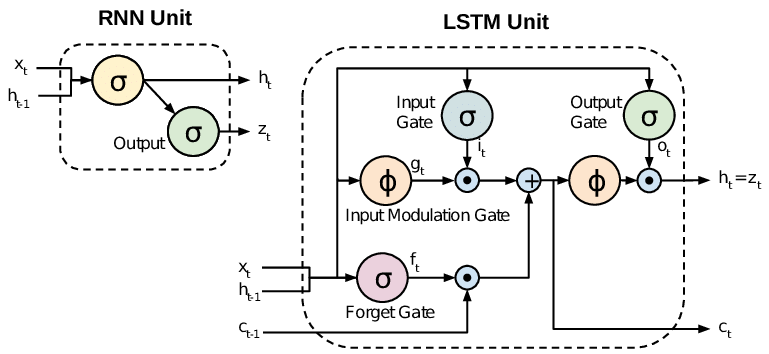
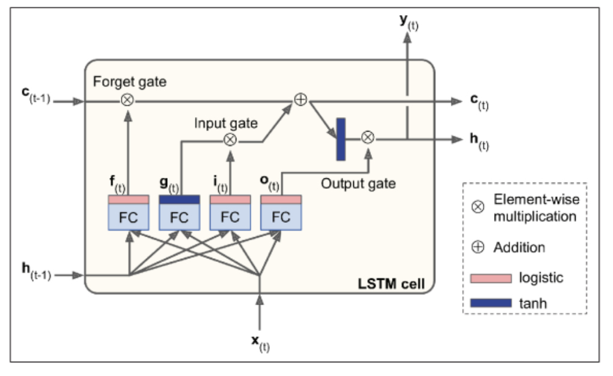
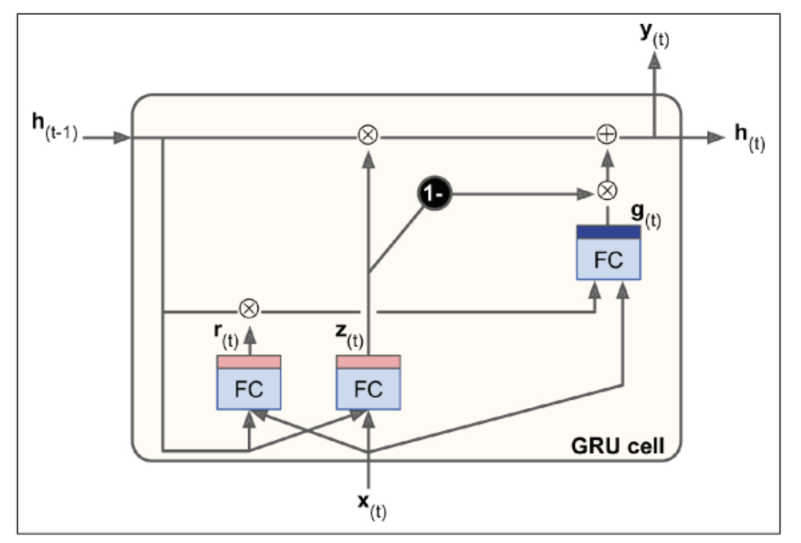
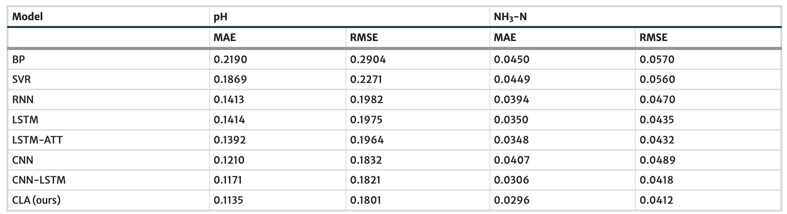
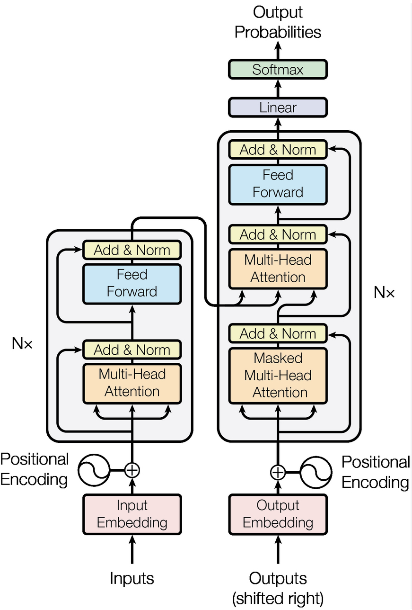
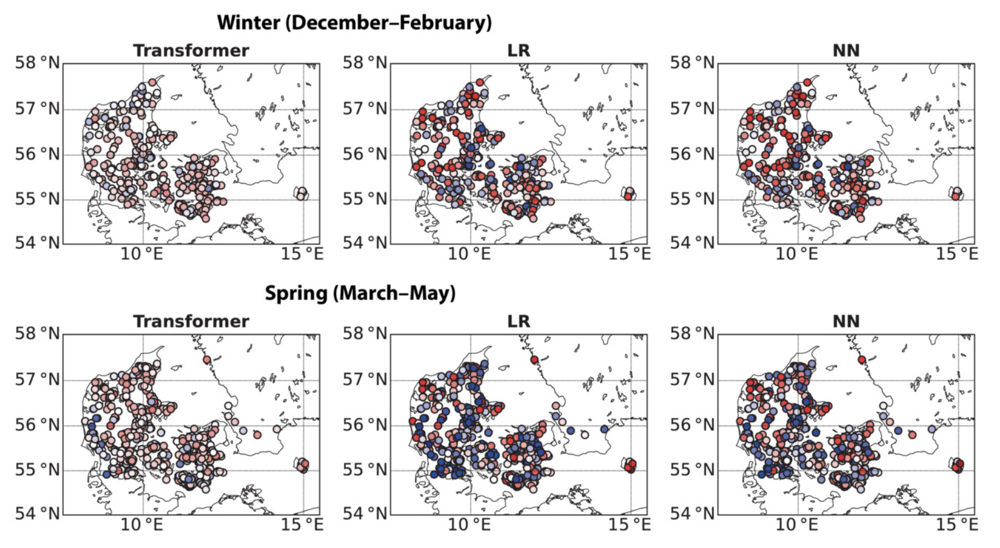

7.2. Neural Networks for Time Series Predictions#
This week, we will introduce ML approaches for time series data. Time series data documents the temporal changes of variables and is very common when dealing with instrumental data. This chapter will introduce the use of Recurrent Neural Networks and 1D Convolutional Neural Networks to predict future changes in variables with time.
Learning Objectives for this chapter include:
Define a recurrent neural network
Distinguish recurrent from convolutional neural networks
Discuss the forecasting of environmental time series
Define natural language processing
Know at least three algorithms to process time-series
7.2.1. Processing Sequences using RNNs and CNNs#

Caption LSTM Model for time series prediction for environmental sciences
Source Figure 1 from Mishra et al. (2020; link to paper)
Key concepts of RNNs:
Unrolling the network through time: This is a way of representing an RNN as a feedforward neural network, where each time step is represented by a separate layer of neurons.
Backpropagation through time (BPTT): This is a way of training RNNs that takes into account the fact that the outputs of the network at a one-time step depend on the outputs of the network at previous time steps.
Vanishing and exploding gradients: These are two problems that can occur when training RNNs, and they can make it difficult for the network to learn long-term dependencies.
Long short-term memory (LSTM) and gated recurrent units (GRUs): These are two types of RNN cells that are designed to address the vanishing and exploding gradients problems.
Take home messages
Time series forecasting in environmental sciences can be framed in different ways: Sequence-to-sequence, sequence-to-vector, vector-to-sequence
The encoder-decoder structure is essentially a sequence-to-vector model followed by a vector-to-sequence model.
A recurrent node unrolling through time => the most straightforward RNN architecture
Stacking multiple layers of recurrent nodes gives you deep RNNs, which may have better skills than simple RNNs
Vanilla RNNs may encounter problems when dealing with long-time series data, such as unstable gradients and short-term memory problems.
Using the Long Short-Term Memory (LSTM) layers or Gated Recurrent Units (GRU) layers in your architecture helps to alleviate the above problems.
These solutions split the available information into long-term and short-term components and learn which part of long-term information to include in the prediction during training.
Time series predictions can also be produced with 1D convolutional networks.
Inputs and Outputs Configurations for RNNs:
Configuration |
Discussion |
|---|---|
Sequence-to-sequence networks |
Predict outputs for each input in a sequence, useful for tasks like predicting stock prices |
Sequence-to-vector networks |
Output a single result for a sequence, suitable for tasks like sentiment analysis |
Vector-to-sequence networks |
generate a sequence based on a constant input, such as generating captions for an image |
Encoder–Decoder networks |
sequence-to-vector and vector-to-sequence components, useful for translation tasks |
Memory cells:
A part of a neural network that preserves some state across time steps is called a memory cell. It is called “memory cells” because past information impacts the neuron outputs.
A single recurrent neuron, or a layer of recurrent neurons, is a very basic cell, capable of learning only short patterns, typically aroundd 10 steps long.
The LSTM and GRU architecture contain more complex cells with the ability to learn longer patterns.
Generally, a cell’s state at time step “t” is denoted as \(h(t)\) and is a function of inputs at that step and its state at the previous step: \(h(t) = f(h(t–1), x(t))\). The output at time step “t,” denoted as \(y(t)\), depends on the previous state and current inputs.
Here we show an schematic diagram of a simple RNN memory cell and a complex cell in a LSTM model (Figure 1 in Rassem et al. 2017). In a simple RNN cell, cell output at a previous time step is stored and added to the input features list, which is then used for predictions.

How to train RNNs
Backpropagation through time (BPTT): Unroll the RNN through time, creating a temporal sequence, and then apply regular backpropagation.
The gradients of the cost function are propagated backward through the unrolled network, and the model parameters are updated using these gradients.
The gradients flow backward through all the outputs used by the cost function, not solely through the final output.
Baseline metrics:
Naive forecasting (predicting the last value in each series)
Fully connected neural network
Forecasting Several Time Steps Ahead:
Two approaches:
Making sequential predictions one step at a time.
Predicting all future values at once.
LSTM cells: This specialized cell improves upon the RNN cell in solving the short-term memory problem of that simple cell. The LSTM cell has gates (forget, input, and output) that control information flow using logistic activation.
The Forget gate \(f(t)\) removes unnecessary information from the long-term state. Input gate \(i(t)\) controls which parts of the new information \(g(t)\) should be added to the long-term state. Output gate \(o(t)\) controls which parts of the long-term state should be read and output.
The main layer outputs \(g(t)\), analyzing current inputs and the previous short-term state. Three gate controllers (forget gate f(t), input gate i(t), and output gate o(t)) control information flow using logistic activation.
The LSTM cell excels at recognizing, storing, preserving, and extracting important inputs over time, making it highly successful in capturing long-term patterns in various data types such as time series, texts, and audio recordings.

Gated Recurrent Unit (GRU) Cells: The GRU cell is a simplified version of the LSTM cell but performs similarly well.
Key simplifications include merging both state vectors into a single vector \(h(t)\), a single gate controller \(z(t)\) governing both the forget and input gates, and the absence of an output gate.
A new gate controller \(r(t)\) determines which part of the previous state is revealed to the main layer \(g(t)\).
Keras provides a keras.layers.GRU layer, making its implementation straightforward by replacing SimpleRNN or LSTM with GRU.

While LSTM and GRU cells contribute significantly to the success of RNNs, they still face challenges in learning long-term patterns in sequences of 100 or more time steps, such as audio samples or long sentences. One approach to address this limitation is to shorten input sequences, potentially by using 1D convolutional layers.
Environmental Sciences Applications
The neural network architectures introduced in this chapter can be useful when your problem involves predicting the time evolution of different physical variables. One example is using LSTM to predict river streamflow in the western US (e.g., Hunt et al. 2022).
Assuming you have a large gridded dataset with time evolution of environmental properties (e.g., topography, vegetation, weather conditions, rainfall predictions), and your research task is to evaluate the likelihood of flooding in the next 12 hours, you can use RNN or similar models to predict the changes in water levels at particular measuring sites. These models make predictions using environmental context from the gridded data and water level predictions at the previous time step.
Reference: Hunt, K. M. R., Matthews, G. R., Pappenberger, F., & Prudhomme, C. (2022). Using a long short-term memory (LSTM) neural network to boost river streamflow forecasts over the western united states. Hydrology and Earth System Sciences, 26(21), 5449-5472. (Link to Paper)
Exercise: Composing Music with RNNs / 1D CNNs
The first exercise of this chapter is to use RNNs and 1D CNNs to create new Chorales in the style of Bach. Can you tune the model hyperparameters to create a track that is listenable?
Load and preprocess a dataset storing multiple existing Bach chorales
Train a small WaveNet to create new chorale in time series format
Evaluate model skills
Repeat the prediction task with RNNs
7.2.2. Transformers and Attention#
Key points
The main disavantages of the RNNs introduced in the previous section is that RNNs have limited capacities to capture long-range dependencies and can be hard to interpret.
Attention mechanism is a useful technique to improve upon the traditional RNNs.
The attention layer consists of a encoding part, a decoding part, and a small neural network (alignment model) to find the similarity between different subsections of inputs and outputs.
The similarity measurements in the model hidden state are interpretable and reveal information on which part of the inputs influences the model prediction the most.
Attention architecture can be used to process visual images. Visual attention informs which part of a picture influences model predictions.
The main advantages of incoporating attention mechanism are (a) ability to capture long-range dependencies, (b) interpretable, and (c) potentially improve model prediction skills.
The attention layer is the vital part of a novel architecture proved to be useful for time series tasks - Transformers.
Novel aspects of transformers include positional encoding and multi-head attention.
Using Natural Language Processing tasks as an example, multihead attention trains different iterations of self-attention that captures different long-range dependencies within a sentence.
The multihead attention module will then combine different similarity matrices and provide the final attention output from 0 to 1.
Attention Mechanism
Allows the decoder to focus on relevant words from the encoder at each time step.
Mitigates the short-term memory limitations of traditional RNNs especially for long sentences.
All encoder outputs are sent to the decoder and at each time step, the decoder’s memory cell computes a weighted sum of these outputs determining the focus on specific words.
These weights containing information of what previous words to focus on are generated by an alignment model that is a small neural network trained parallel to the Encoder-Decoder model.
There are two main types of attention:
Bahdanau attention (concatenative attention): Combines encoder output with the decoder’s previous hidden state.
Luong attention (multiplicative attention): Computes the dot product of encoder outputs and the decoder’s hidden state. The weights derived from this dot product are obtained through a softmax layer.
It has been demonstrated that dot product variants outperformed concatenative attention.
Models originally developed for language tasks has resulted in breakthroughs in environmental sciences studies. These models can be adapted to environmental sciences because the goal and data structure of time series prediction tasks are very similar to human languages.
Here we show a comparison of different ML model architectures in predicting water quality (Yang et al. 2021). Notice that adding an attention layer to the same background moddel architecture yields substantial reduction in the model error (compare the LSTM and LSTM-Attention results)

Transformers
Revolutionized neural machine translation (NMT) without the need of recurrent or convolutional layers for translation tasks
It uses only attention mechanisms, yet achieved state-of-the-art performance in translation tasks and exhibited faster training and enhanced parallelization capabilities
In the Transformer architecture, the encoder takes input sentences represented as sequences of word IDs. It encodes each word into a 512-dimensional representation.
The decoder takes the target sentence as input and receives the encoder’s outputs.
The decoder outputs probabilities for each possible next word at each time step. The decoder predicts subsequent words without target inputs, relying on previously generated words until an end-of-sequence token is produced.
The key components include two embedding layers, skip connections, layer normalization, feed-forward modules, and a softmax activation output layer.
The novel components are the Multi-Head Attention layers in both the encoder and decoder.
The encoder’s layer encodes relationships between words in the same sentence using self-attention, emphasizing more relevant words.
The decoder’s Masked Multi-Head Attention layer ensures each word attends only to preceding words, while the upper Multi-Head Attention layer enables the decoder to attend to words in the input sentence.
Positonal encodings, the second novel component, are dense vectors representing word positions in a sentence. Added to word embeddings, these encodings provide the model with positional information.
Positional encodings are crucial for understanding word order as the Multi-Head Attention layers focus on relationships between words.

The use of transformer has become more attractive in environmental sciences problems in recent years
Alerskans et al. (2022) developed a transformer-based machine learning moddel to predict the surface temperature values for different sites in Denmark.
In Figure 4 of this paper, the authors compares the bias/errors in the transformer temperature predictions for different seasons to other ML baselines (linear regression, neural network).
While there are seasonal variabilities in the results, the transformer consistently beats the baselines for all seasons at most of the study sites.

Reference:
Rassem, A., El-Beltagy, M., & Saleh, M. (2017). Cross-country skiing gears classification using deep learning. arXiv preprint arXiv:1706.08924.
Yang, Y., Xiong, Q., Wu, C., Zou, Q., Yu, Y., Yi, H., & Gao, M. (2021). A study on water quality prediction by a hybrid CNN-LSTM model with attention mechanism. Environmental Science and Pollution Research, 28(39), 55129-55139.
Alerskans, E., Nyborg, J., Birk, M., & Kaas, E. (2022). A transformer neural network for predicting near‐surface temperature. Meteorological Applications, 29(5), e2098.